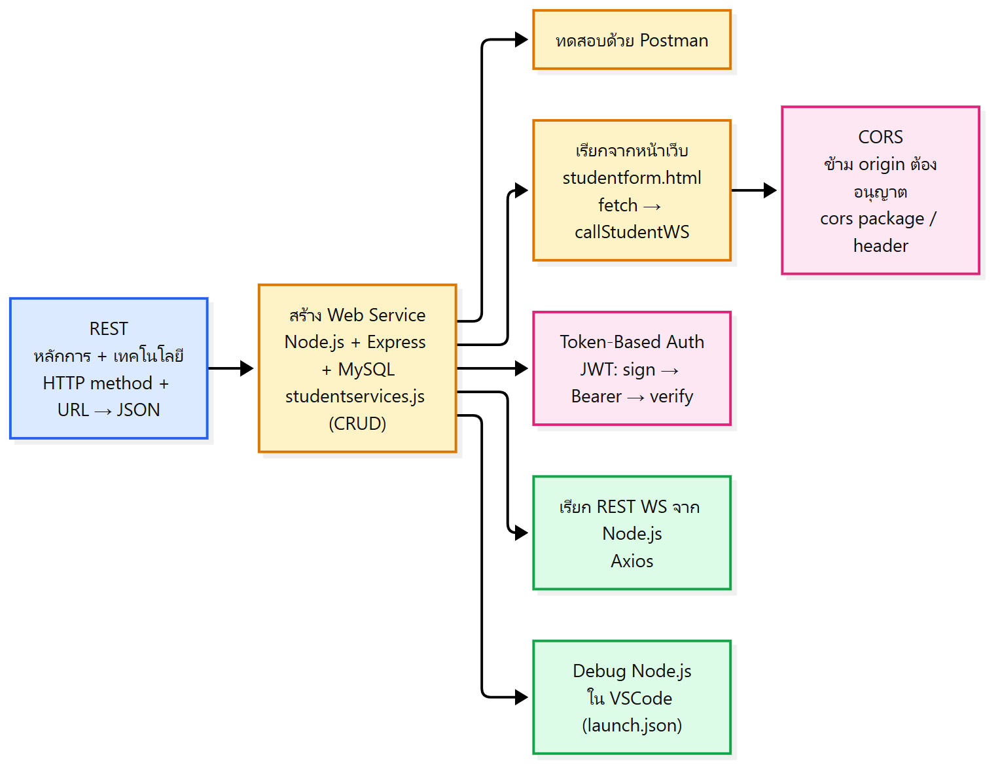
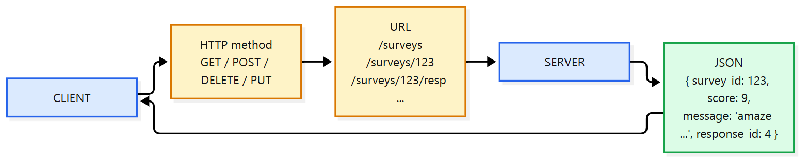
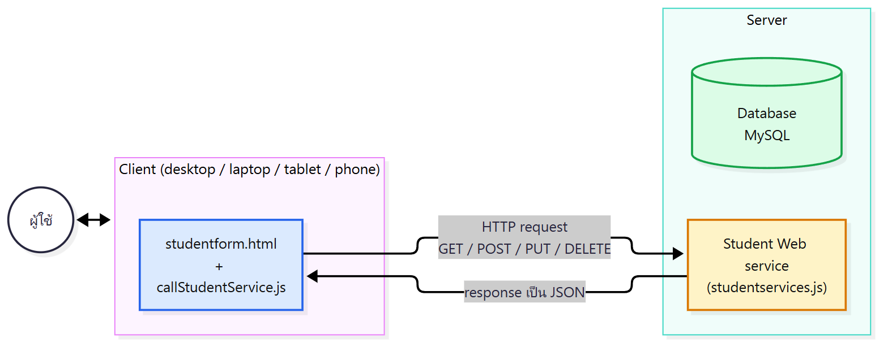
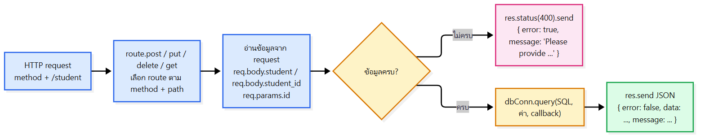
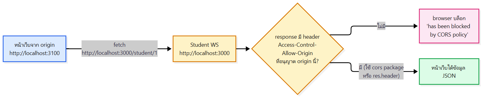
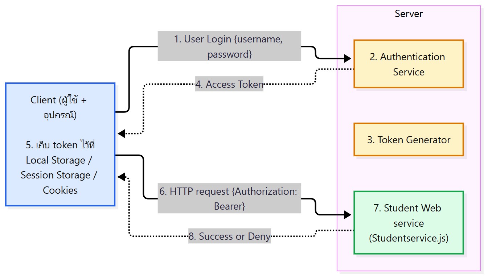
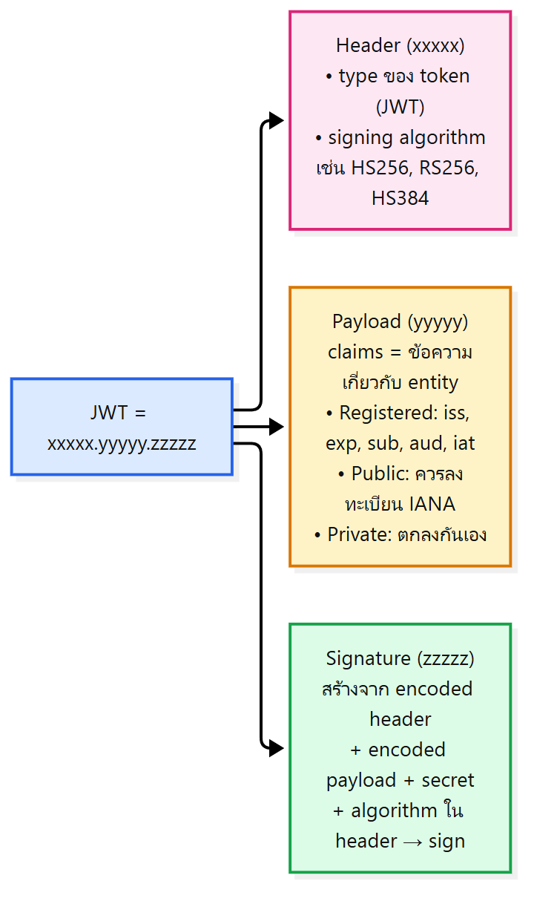
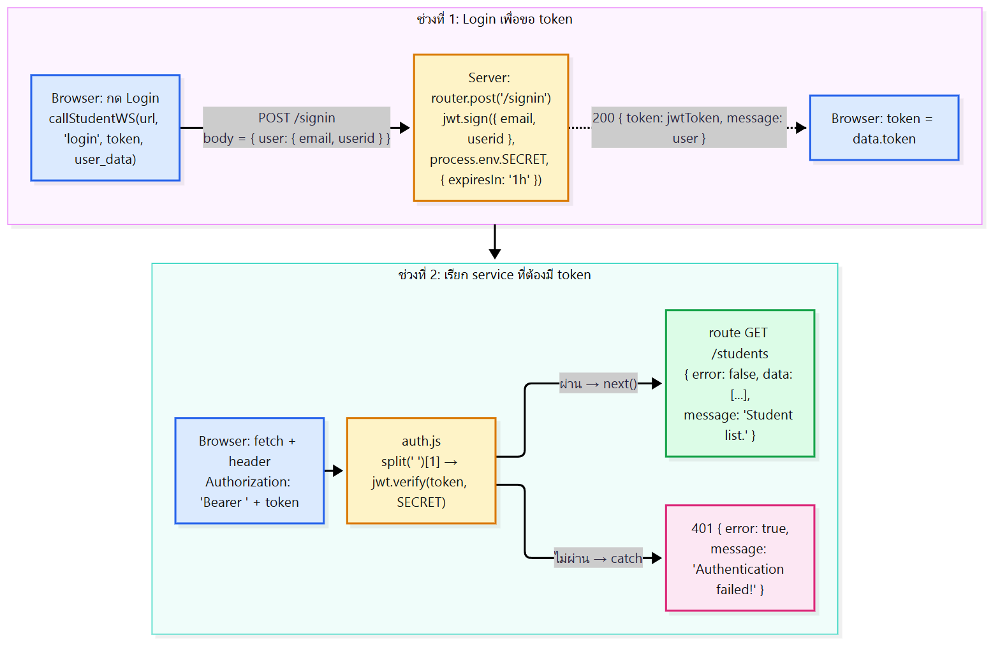
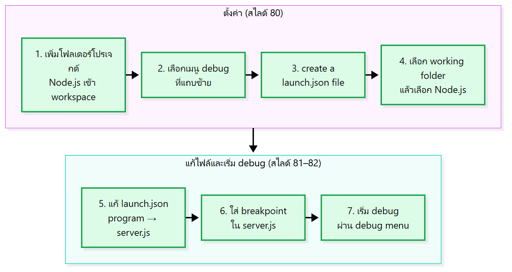

ภาพรวมบทนี้: บทนี้ต่อจาก Express — สร้าง Web Service แบบ REST ด้วย Node.js + Express + MySQL (ไฟล์
studentservices.js) ที่ทำ CRUD ข้อมูลนักศึกษาแล้วตอบกลับเป็น JSON, ทดสอบด้วย Postman, เรียกจากหน้าเว็บด้วยfetchแล้วเจอปัญหา CORS (ข้าม origin), ป้องกัน service ด้วย Token-Based Authentication / JWT, เรียก REST service จากฝั่ง Node.js ด้วย Axios และปิดท้ายด้วยการ debug Node.js ใน VSCodeบทนี้ไม่มีโจทย์คำนวณ แต่มี โค้ด Node.js/Express หลายชุด — ทุกชุดในสรุปนี้ถูกรันจริงด้วย Node v22.16 + Express 5.3.0, cors 2.8.6, jsonwebtoken 9.0.3, axios 1.21.1, dotenv แล้ว (ผลรันอยู่ในแต่ละหัวข้อ)
⚠️ เครื่องที่ตรวจไม่มี MySQL จึงใช้ database จำลองในหน่วยความจำ ที่ตอบแบบเดียวกับ
dbConn.query(คืนaffectedRows/ แถวข้อมูล) — ส่วน route, การเช็กข้อมูล, JSON ที่ตอบ, CORS, JWT, Axios เป็นผลจากโค้ดสไลด์จริง

⚠️ เลขสไลด์ในสรุปนี้ = เลขหน้า PDF (83 หน้า) — เลขที่พิมพ์มุมขวาล่างของสไลด์ตรงกันถึงหน้า 31 แล้วจากนั้นเลื่อน: หน้า 32–45 พิมพ์ +2 (เช่นหน้า 32 พิมพ์ "34"), หน้า 46–66 พิมพ์ +4 (หน้า 46 พิมพ์ "50"), หน้า 67–83 พิมพ์ +6 (หน้า 67 พิมพ์ "73") — แปลว่าไฟล์นี้ตัดสไลด์บางหน้าออกไป
0. บทนี้เรียนอะไร?
แก่นเป้าหมาย 4 ข้อ — สร้าง Web Services ด้วย Node.js, อธิบาย CORS, อธิบาย JWT, ทดสอบ Web Services
- สไลด์ 1: ITDS241 Web Technologies and Applications — Web Services with Node.js (Asst. Prof. Wudhichart Sawangphol)
- Class Objectives (สไลด์ 2) — หลังเรียนควรทำได้:
- สร้าง Web Services ด้วย Node.js
- อธิบายแนวคิดพื้นฐานของ Cross-origin resource sharing (CORS)
- อธิบายแนวคิดพื้นฐานของ JSON Web Tokens (JWT)
- ทดสอบ (test) Web Services
- Contents (สไลด์ 4): Create WS using Node.js → Testing WS using Postman → CORS → Token-Based Authentication → JWT → Calling RESTful WS using Node.js → Node.js Debugger via VSCode
1. REST คืออะไร มีหลักการอะไร?
แก่นREST API = client ส่ง HTTP method (GET/POST/PUT/DELETE) ไปที่ URL ของ resource แล้ว server ตอบกลับเป็น JSON มีหลัก 5 ข้อ เช่นให้ทุกอย่างมี ID ใช้ method มาตรฐาน และสื่อสารแบบ stateless
1.1 REST API หน้าตาเป็นยังไง?
แก่นclient ส่ง HTTP method + URL ไปที่ server แล้ว server ตอบกลับเป็น JSON
รูป "What is a REST API?" (จาก medium.com):

- Client ส่ง request ที่ประกอบด้วย HTTP method (GET, POST, DELETE, PUT) + URL ของ resource (
/surveys,/surveys/123,/surveys/123/resp ...) - Server ตอบกลับเป็น JSON เช่น
{ survey_id: 123, score: 9, message: "amaze ...", response_id: 4 }
💡 เปรียบเหมือนสั่งอาหารที่เคาน์เตอร์: URL คือ "เมนูไหน" method คือ "จะทำอะไรกับมัน" (ขอดู/สั่งเพิ่ม/แก้/ยกเลิก) แล้วได้ของกลับมาในรูปแบบมาตรฐาน (JSON)
1.2 Key REST principles
แก่น5 หลัก: ทุกอย่างมี ID, เชื่อมโยงกัน, ใช้ method มาตรฐาน, แสดงได้หลายรูปแบบ, สื่อสารแบบ stateless
| หลักการ | ความหมาย |
|---|---|
| Give every "thing" an ID | ทุก resource มีตัวระบุ เช่น /surveys/123, /student/4 |
| Link things together | resource เชื่อมโยงถึงกัน |
| Use standard methods | ใช้ HTTP method มาตรฐาน (GET, POST, PUT, DELETE) |
| Resources with multiple representations | resource เดียวแสดงได้หลายรูปแบบ (สไลด์ 6 ระบุว่าใช้ XML และ JSON แลกเปลี่ยนข้อมูล) |
| Communicate statelessly | สื่อสารแบบไม่เก็บสถานะ (stateless) ระหว่าง request |
1.3 REST: Technologies
แก่นHTTP เป็นฐาน + Node.js + XML/JSON แลกข้อมูล + JavaScript ฝั่ง client
- HTTP เป็นพื้นฐาน
- Node.js (ฝั่ง server ในวิชานี้)
- XML และ JSON สำหรับแลกเปลี่ยนข้อมูล
- JavaScript สำหรับเขียนฝั่ง client (เช่น browser)
2. สร้าง REST web service ด้วย Node.js + MySQL ต้องเตรียมอะไร?
แก่นสร้าง database + table → ติดตั้ง dotenv, express, mysql2, nodemon → เก็บค่าเชื่อมต่อใน .env → เขียน studentservices.js (ต่อ DB + CRUD) → ทำ studentform.html ไว้เรียก service
2.1 ขั้นตอนทั้งหมด
แก่น6 ขั้น: database → table → packages → .env → studentservices.js → studentform.html
- Create a database
- Create a table
- Install all necessary packages
- Create the
.envfile - Create
studentservices.jsto access the database - Create HTML (
studentform.html) to interact with the service
2.2 Overview Architecture
แก่นผู้ใช้ใช้อุปกรณ์ (client) ส่ง request GET/POST/PUT/DELETE ไปที่ Student Web service ซึ่งต่อกับ database แล้วตอบกลับเป็น JSON

- ฝั่ง client: ผู้ใช้ + อุปกรณ์ (desktop, laptop, tablet, phone)
- ลูกศรไป: GET / POST / PUT / DELETE → กล่อง Student Web service (Studentservice.js) + server + database
- ลูกศรกลับ: JSON
- สไลด์ 12 คือรูปเดียวกันซ้ำ (เปิดส่วน Student Services) และสไลด์ 33 ใช้รูปเดียวกันแต่ ตีกรอบแดงที่ฝั่ง client เพื่อเปิดส่วน Student Form (ข้อ 5)
2.3 Packages ที่ต้องใช้
แก่นต้องมี 4 packages: dotenv, express, mysql2, nodemon
| package | ใช้ทำอะไร (ตามที่ใช้ในบทนี้) |
|---|---|
dotenv |
อ่านค่าจากไฟล์ .env มาเป็น process.env.* |
express |
framework ทำ server + route |
mysql2 |
เชื่อมต่อ MySQL (mysql.createConnection) |
nodemon |
restart server อัตโนมัติเมื่อแก้ไฟล์ (จาก L10) |
2.4 ไฟล์ .env
แก่นใช้ .env เป็นไฟล์ configuration — เก็บ user/password/ชื่อ DB/host แยกจากโค้ด
# .env
DB_user = "itcs212"
DB_pass = "itcs212"
DB_name = "itcs212"
host = "localhost"
ผลรันจริง: require("dotenv").config() อ่านไฟล์นี้ได้ (มีช่องว่างรอบ = ก็ได้) → process.env.DB_user = itcs212, process.env.host = localhost
2.5 studentservices.js คืออะไร และ CRUD จับคู่กับ SQL/HTTP ยังไง?
แก่นstudentservices.js เป็นไฟล์หลักของ service มีทั้งการเชื่อมต่อ database และ CRUD ทั้งหมด — ใน RESTful WS ใช้ Create=POST, Read=GET, Update=PUT, Delete=DELETE
| Operation | SQL | HTTP | RESTful WS |
|---|---|---|---|
| Create | INSERT | PUT / POST | POST |
| Read (Retrieve) | SELECT | GET | GET |
| Update (Modify) | UPDATE | PUT / POST / PATCH | PUT |
| Delete (Destroy) | DELETE | DELETE | DELETE |
💡 ช่อง HTTP บอกว่า "ใช้ได้หลายตัว" แต่ช่อง RESTful WS คือ ตัวที่บทนี้ใช้จริง — จำคู่ C-POST, R-GET, U-PUT, D-DELETE
2.6 เชื่อมต่อ database
แก่นmysql.createConnection ด้วยค่า host/user/password/database ที่ดึงจาก process.env
// create the connection to database
let dbConn = mysql.createConnection({
host: process.env.host,
user: process.env.DB_user,
password: process.env.DB_pass,
database: process.env.DB_name,
});
mysql.createConnection({...})สร้างการเชื่อมต่อ (ได้ objectdbConnไว้ใช้dbConn.query(...)ทุก route)- ค่าทุกตัวดึงจาก
.envผ่านprocess.env— ชื่อต้องตรงกับในไฟล์ (hostตัวเล็ก,DB_user,DB_pass,DB_name)
⚠️ สไลด์ไม่ได้แสดงบรรทัด
require(เช่นrequire("dotenv").config(),require("mysql2"),express.Router()) และไม่ได้แสดงapp.use(express.json())— ตอนรันจริงต้องมีexpress.json()ไม่งั้นreq.bodyเป็นundefined(เรื่องเดียวกับ POST form ใน L10)
3. แต่ละ route ของ Student WS (CRUD) เขียนยังไง?
แก่นทุก route มีรูปแบบเดียวกัน — อ่านข้อมูลจาก request (req.body หรือ req.params) → ถ้าไม่ครบตอบ 400 → dbConn.query(SQL, ค่า, callback) → ตอบ JSON { error, data, message }

สรุป 5 service:
| งาน | Method + URL | ข้อมูลเข้ามาทาง | SQL | data ที่ตอบ |
message |
|---|---|---|---|---|---|
| Insert | POST /student |
body { student: {...} } |
INSERT INTO student SET ? |
affectedRows (1) |
New student has been created successfully. |
| Update | PUT /student |
body { student: {...} } |
UPDATE student SET ? WHERE STU_ID = ? |
affectedRows (1) |
Student has been updated successfully. |
| Delete | DELETE /student |
body { student_id: 99998 } |
DELETE FROM student WHERE STU_ID = ? |
affectedRows (1) |
Student has been deleted successfully. |
| Select one | GET /student/4 |
URL parameter :id |
SELECT * FROM student where STU_ID=? |
แถวเดียว results[0] |
Student retrieved |
| Select all | GET /students |
— | SELECT * FROM student |
array ทุกแถว results |
Student list. |
ตารางนักศึกษามี 4 คอลัมน์: STU_ID, STU_FNAME, STU_LNAME, STU_AGE
⚠️ JSON ตัวอย่างในสไลด์ 16–25 เขียน
"STU_FNAME": ”XXXXX"(เปิดด้วยเครื่องหมายคำพูดโค้ง”) — ถ้าคัดลอกไปวางใน Postman จะเป็น JSON ไม่ถูกต้อง (ทดสอบJSON.parseแล้วได้Unexpected token '”') ต้องใช้"ธรรมดา
3.1 Insert Student — POST /student
แก่นส่งข้อมูลนักศึกษาใน body ชื่อ student → INSERT INTO student SET ? → ตอบ data: 1 (จำนวนแถวที่เพิ่ม)
Request (สไลด์ 16):
POST /student
Body:
{
"student": {
"STU_ID": 99998,
"STU_FNAME": "XXXXX",
"STU_LNAME": "YYYYY",
"STU_AGE": 35
}
}
โค้ด (สไลด์ 17):
route.post('/student', function (req, res) {
let student = req.body.student;
console.log(student);
if (!student) {
return res.status(400).send({ error: true, message: 'Please provide student information' });
}
dbConn.query("INSERT INTO student SET ? ", student, function (error, results) {
if (error) throw error;
return res.send({error: false, data: results.affectedRows, message: 'New student has been created successfully.'});
});
});
อธิบายทีละขั้น:
route.post('/student', ...)— สไลด์ชี้ว่าเป็น Service URL: รับ POST ที่/studentreq.body.student— ดึง objectstudentจาก body (JSON format ตามกล่องด้านบน)- ถ้าไม่มี
student→ ตอบ 400 พร้อม{ error: true, message: 'Please provide student information' } dbConn.query("INSERT INTO student SET ? ", student, cb)—?ถูกแทนด้วย objectstudent(คอลัมน์ = key ของ object)- สำเร็จ → ตอบ JSON
{ error: false, data: results.affectedRows, message: ... }
Response (สไลด์ 16–17):
{
"error": false,
"data": 1,
"message": "New student has been created successfully."
}
ผลรันจริง:
| Request | Response |
|---|---|
POST /student body ตามสไลด์ |
200 {"error":false,"data":1,"message":"New student has been created successfully."} — console พิมพ์ { STU_ID: 99998, STU_FNAME: 'XXXXX', STU_LNAME: 'YYYYY', STU_AGE: 35 } |
POST /student body {} |
400 {"error":true,"message":"Please provide student information"} — console พิมพ์ undefined |
3.2 Update Student — PUT /student
แก่นส่งข้อมูลใหม่ใน body student → UPDATE student SET ? WHERE STU_ID = ? โดยแทน ? ด้วย [student, student_id] ตามลำดับ → ตอบ data: 1
Request (สไลด์ 18): PUT /student body เหมือน insert ({ "student": { "STU_ID": 99998, ... "STU_AGE": 35 } })
โค้ด (สไลด์ 19):
route.put('/student', function (req, res) {
let student_id = req.body.student.student_id;
let student = req.body.student;
if (!student_id || !student) {
return res.status(400).send({ error: student, message: 'Please provide student information' });
}
dbConn.query("UPDATE student SET ? WHERE STU_ID = ?", [student, student_id], function (error, results) {
if (error) throw error;
return res.send({error: false, data: results.affectedRows, message: 'Student has been updated successfully.'})
});
});
?ตัวแรก ←student(ค่าใหม่ทั้ง object),?ตัวที่สอง ←student_id(แถวไหน) — ส่งเป็น array ตามลำดับ?- Response (สไลด์ 18–19):
{ "error": false, "data": 1, "message": "Student has been updated successfully." }
⚠️ โค้ดกับ body ในสไลด์ไม่ตรงกัน: โค้ดอ่าน
req.body.student.student_idแต่ body ในสไลด์ 18 มีSTU_IDไม่มีstudent_id→ รันจริงด้วย body ตามสไลด์ได้ 400{"error":{"STU_ID":99998,...},"message":"Please provide student information"}(ไม่ใช่ 200 ตามสไลด์) — ต้องใส่student_idใน objectstudentด้วย (รันแล้วได้ 200data: 1) หรือถามอาจารย์ว่าตั้งใจให้อ่านจาก field ไหน⚠️ กรณี 400 โค้ดนี้ตอบ
error: student(ส่ง object นักศึกษากลับไป) ต่างจาก route อื่นที่ตอบerror: true
3.3 Delete Student — DELETE /student
แก่นส่ง student_id ใน body → DELETE FROM student WHERE STU_ID = ? → ตอบ data: 1
Request (สไลด์ 20): DELETE /student body { "student_id": 99998 }
โค้ด (สไลด์ 21):
route.delete('/student', function (req, res) {
let student_id = req.body.student_id;
if (!student_id) {
return res.status(400).send({ error: true, message: 'Please provide student_id' });
}
dbConn.query('DELETE FROM student WHERE STU_ID = ?', [student_id], function (error, results) {
if (error) throw error;
return res.send({ error: false, data: results.affectedRows, message: 'Student has been deleted successfully.' });
});
});
ผลรันจริง:
| Request | Response |
|---|---|
DELETE /student body {"student_id":99998} |
200 {"error":false,"data":1,"message":"Student has been deleted successfully."} |
DELETE /student body {} |
400 {"error":true,"message":"Please provide student_id"} |
3.4 Select a student — GET /student/:id
แก่นid อยู่ใน URL (/student/4) → route เขียน /student/:id แล้วอ่านด้วย req.params.id ("Receive value as parameter") → ตอบแถวแรก results[0]
route.get('/student/:id', function (req, res) {
let student_id = req.params.id;
if (!student_id) {
return res.status(400).send({ error: true, message: 'Please provide student id.' });
}
dbConn.query('SELECT * FROM student where STU_ID=?', student_id, function (error, results) {
if (error) throw error;
return res.send({ error: false, data: results[0], message: 'Student retrieved' });
});
});
Response ของ GET /student/4 (สไลด์ 22–23):
{
"error": false,
"data": { "STU_ID": 4, "STU_FNAME": "XXXXX", "STU_LNAME": "YYYYY", "STU_AGE": 25 },
"message": "Student retrieved"
}
dataเป็น object เดียว (เพราะใช้results[0]) ไม่ใช่ array
ผลรันจริง:
| Request | Response |
|---|---|
GET /student/4 |
200 ตรงกับสไลด์ (req.params.id ได้ค่าเป็น string "4") |
GET /student/12345 (ไม่มีในตาราง) |
200 {"error":false,"message":"Student retrieved"} — results[0] เป็น undefined จึงไม่มี key data |
GET /student/ (ไม่ใส่ id) |
404 Cannot GET /student/ — ไม่เข้า route นี้เลย บรรทัด if (!student_id) จึงไม่ได้ทำงานในกรณีนี้ |
3.5 Select all students — GET /students
แก่นไม่ต้องส่งอะไร → SELECT * FROM student → data เป็น array ของทุกแถว
route.get('/students', function (req, res) {
dbConn.query('SELECT * FROM student', function (error, results) {
if (error) throw error;
return res.send({ error: false, data: results, message: 'Student list.' });
});
});
Response (สไลด์ 24–25):
{
"error": false,
"data": [
{ "STU_ID": 4, "STU_FNAME": "XXXXX", "STU_LNAME": "YYYYY", "STU_AGE": 25 },
{ "STU_ID": 99999, "STU_FNAME": "AAAAA", "STU_LNAME": "BBBBB", "STU_AGE": 24 }
],
"message": "Student list."
}
ผลรันจริง: ได้ JSON รูปแบบเดียวกัน (array ทุกแถว)
💡 สังเกต URL:
/student(เอกพจน์) ใช้กับ POST/PUT/DELETE และ/student/:id;/students(พหูพจน์) ใช้กับ "ขอทั้งหมด"
3.6 Output ของ service
แก่นผลลัพธ์ทุกอย่างจาก studentservices.js อยู่ในรูปแบบ JSON
- ทุก route ตอบ object ที่มี 3 key เหมือนกัน:
error(true/false),data,message
4. ทดสอบ web service ด้วย Postman ยังไง?
แก่นPostman เป็นแอปช่วยพัฒนา API ใช้ทดสอบ service ได้โดยไม่ต้องมีหน้าเว็บ — New → HTTP → เลือก method → ใส่ URL → Send → ดู response
4.1 Postman คืออะไร
แก่นPostman = collaboration platform for API development ใช้ทดสอบ web service
- ใช้ ทดสอบ web service ของเรา
- คำนิยามที่สไลด์อ้าง: "Postman is a collaboration platform for API development. Postman's features simplify each step of building an API and streamline collaboration so you can create better APIs—faster"
- ดาวน์โหลดที่ https://www.postman.com/downloads/
- สไลด์ 28: ภาพหน้าจอ Postman (Untitled Request: ช่อง method GET, ช่อง URL, ปุ่ม Send, แท็บ Params/Authorization/Headers/Body, ส่วน Response ด้านล่าง)
4.2 สร้าง request
แก่นNew → HTTP → เลือก method → ใส่ URL → Send
- กด New (สไลด์ 29) → เลือกชนิด HTTP (ตัวเลือกอื่นในหน้าต่าง: GraphQL, gRPC, WebSocket, Socket.IO, MQTT ฯลฯ)
- เลือก HTTP method จาก dropdown (สไลด์ 30): GET, POST, PUT, PATCH, DELETE, HEAD, OPTIONS หรือพิมพ์ method ใหม่
- ใส่ URL ในช่อง "Enter URL or paste text" แล้วกด Send
4.3 ดูผลลัพธ์
แก่นPostman แสดง Status (200 OK), เวลา, ขนาด และ body ที่เป็น JSON
ภาพ response ของ GET /students: Status 200 OK, Time 182ms, Size 518 B, แสดง body แบบ Pretty / JSON:
{
"error": false,
"data": [
{ "STU_ID": 1, "STU_FNAME": "Wudhichart", "STU_LNAME": "Sawanpghol", "STU_AGE": 21 },
{ "STU_ID": 2, "STU_FNAME": "Jidapa", "STU_LNAME": "Kraisangka", "STU_AGE": 25 },
{ "STU_ID": 3, "STU_FNAME": "Dolvara", "STU_LNAME": "Guna-Tilaka", "STU_AGE": 25 }
],
"message": "Student list."
}
💡 สำหรับ POST/PUT/DELETE ที่ต้องส่ง body (ข้อ 3) ใน Postman ใช้แท็บ Body (เห็นในสไลด์ 28) — สไลด์ไม่ได้แสดงขั้นตอนนี้ละเอียด
5. หน้าเว็บ (studentform.html) เรียก service ยังไง?
แก่นstudentform.html มีช่อง Student ID / Firstname / Lastname / Age และปุ่ม Insert, Update, Delete, Select, Select all — ปุ่มเรียกฟังก์ชัน callStudentWS(url, method, sentData) ที่ใช้ fetch ส่ง request แล้ว response.json() แปลงผลเป็น object มาเติมลงฟอร์ม
5.1 หน้าฟอร์ม
แก่นฟอร์มมี 4 ช่อง (ID, Firstname, Lastname, Age) + 5 ปุ่ม (Insert, Update, Delete, Select, Select all)
- สไลด์ 32: หน้าเปิดส่วน Student Form; สไลด์ 33: Overview Architecture ตีกรอบที่ฝั่ง client (ส่วนที่จะทำต่อไปนี้)
studentform.html(สไลด์ 34):
| ช่อง | placeholder |
|---|---|
| Student ID: | Student ID |
| Student Firstname: | Firstname |
| Student Lastname: | Lastname |
| Student Age: | Age |
ปุ่ม: Insert · Update · Delete · Select · Select all
5.2 ฟังก์ชัน callStudentWS
แก่นasync function ที่รับ url + ชื่องาน (method) แล้วใช้ fetch ยิง request — ตัวอย่างนี้มีแค่กรณี "select" (GET)
async function callStudentWS(url, method, sentData = {}) {
let data;
if (method == "select") {
let response = await fetch(url, {
method: 'GET'
});
data = await response.json();
}
return data;
}
async function— ข้างในใช้awaitได้ และฟังก์ชันคืน Promise (จึงต้องใช้.then(...)ตอนเรียก)methodที่นี่คือ ชื่องาน ของเรา ("select") ไม่ใช่ HTTP method — HTTP method จริงกำหนดในfetch(url, { method: 'GET' })await fetch(...)— รอ response จาก serviceawait response.json()— แปลง body ที่เป็น JSON เป็น objectsentData = {}— ค่า default ไว้ส่งข้อมูล (ยังไม่ได้ใช้ในกรณี select)
5.3 ปุ่ม Select
แก่นกด Select → อ่าน ID → เรียก callStudentWS(url + id, "select") → .then เอา data.data.* เติมลงฟอร์ม
let selectBtnRef = document.querySelector("#select");
selectBtnRef.addEventListener("click", () => {
STU_ID = STU_IDTxtRef.value;
callStudentWS("http://localhost:3000/student/" + STU_ID,
"select").then(
(data) => {
console.log(data);
if (data) {
alert(data.message);
STU_IDTxtRef.value = data.data.STU_ID;
STU_FNAMETxtRef.value = data.data.STU_FNAME;
STU_LNAMETxtRef.value = data.data.STU_LNAME;
STU_AGETxtRef.value = data.data.STU_AGE;
}
}
);
});
ทีละขั้น:
- หาปุ่ม
#selectแล้วผูก eventclick - อ่าน Student ID จากช่องกรอก → ต่อเป็น URL
http://localhost:3000/student/<id>(ตรงกับ routeGET /student/:idข้อ 3.4) - Call the function "callStudentWS" ด้วยงาน
"select" .then((data) => ...)— ได้ object JSON →alert(data.message)(เช่น "Student retrieved")- ส่วนที่สไลด์ตีกรอบแดง: เอา
data.data.STU_ID / STU_FNAME / STU_LNAME / STU_AGEใส่กลับลงช่องในฟอร์ม — สังเกตว่าเป็นdata.dataเพราะdataตัวแรกคือ response ทั้งก้อน ส่วน.dataคือ keydataใน JSON
ผลรันจริง (เรียก callStudentWS(".../student/4", "select") ใน Node): data.message = Student retrieved, data.data.STU_FNAME = XXXXX, data.data.STU_AGE = 25
5.4 Student Form (cont.)
แก่นstudentForm.html ใช้ติดต่อกับ studentservices.js (โค้ดปุ่มอื่นให้ดูจากตัวอย่าง)
studentForm.htmlใช้ติดต่อกับstudentservices.js- "See Example." — สไลด์ไม่ได้แสดงโค้ดของปุ่ม Insert/Update/Delete/Select all (ให้ดูจากไฟล์ตัวอย่างของอาจารย์)
6. CORS คืออะไร และเปิดให้ข้าม origin ยังไง?
แก่นsame-origin policy ให้ script เข้าถึงข้อมูลได้เฉพาะหน้าที่ origin เดียวกัน ถ้าต่าง domain / subdomain / port / protocol จะถูกบล็อก — CORS คือกลไกที่ให้ server อนุญาต origin อื่น ใน Node ใช้ package cors (app.use(cors())) หรือตั้ง header Access-Control-Allow-Origin เอง

6.1 Same-origin policy
แก่นscript เข้าถึงข้อมูลหน้าอื่นได้ก็ต่อเมื่อ origin (domain) เดียวกัน
- same-origin policy = นโยบายที่ให้ script ในหน้าเว็บหนึ่ง เข้าถึงข้อมูลของอีกหน้าได้ก็ต่อเมื่อทั้งสองหน้ามี origin (domain) เดียวกันเท่านั้น
6.2 CORS และเงื่อนไขที่ถือว่า "ข้าม origin"
แก่นCORS ให้ resource ถูกขอจาก domain อื่นได้ — ข้าม origin เมื่อต่าง domain, subdomain, port หรือ protocol
- Cross-origin resource sharing (CORS) = กลไกที่ยอมให้ resource ที่ถูกจำกัด (เช่น fonts) บนหน้าเว็บ ถูก request จาก domain อื่น นอก domain ที่ส่ง resource แรกมา
- Cross-Origin request ล้มเหลว ถ้าไปที่:
| ต่างกันที่ | ตัวอย่าง |
|---|---|
| domain ต่าง | — |
| subdomain ต่าง | — |
| port ต่าง | หน้าเว็บ localhost:3100 → service localhost:3000 (ตัวอย่างในสไลด์) |
| protocol ต่าง | — |
ข้อความ error ใน console ที่สไลด์แสดง:
Access to fetch at 'http://localhost:3000/student/1' from origin 'http://localhost:3100'
has been blocked by CORS policy: No 'Access-Control-Allow-Origin' header is present on
the requested resource. If an opaque response serves your needs, set the request's mode
to 'no-cors' to fetch the resource with CORS disabled.
- อ่านว่า: หน้าเว็บอยู่ที่ port 3100 แต่ไปเรียก service ที่ port 3000 → port ต่าง = คนละ origin และ response ไม่มี header
Access-Control-Allow-Origin→ ถูกบล็อก
💡 เปรียบเหมือนหอพักที่ รปภ. (browser) ปล่อยให้คนนอกหอ (origin อื่น) เอาของออกไปได้ก็ต่อเมื่อเจ้าของห้อง (server) เขียนใบอนุญาต (header) แนบมาด้วย
6.3 เปิด CORS ทั้งหมดด้วย package cors
แก่นnpm install --save cors แล้วเพิ่ม 2 บรรทัดใน studentservices.js → เปิด CORS ให้ทุก request
npm install --save cors
var cors = require('cors');
app.use(cors());
6.4 เปิดเฉพาะบาง route
แก่นใส่ cors() เป็น middleware ใน route นั้นแทน app.use(cors())
app.use(cors());→ ทุก route เป็น CORS- ถ้าอยากเปิด เฉพาะบาง route ให้ใส่
cors()เป็น middleware ใน route นั้น:
app.get('/student/:id', cors(), function (req, res) {
res.json({msg: 'This is CORS-enabled for a Single Route'})
})
(ที่มา: expressjs.com/en/resources/middleware/cors.html)
6.5 ตั้งค่า origin และ methods
แก่นส่ง options ให้ cors(...) — origin = origin ที่อนุญาต (string หรือ array), methods = method ที่อนุญาต
let corsOptions = {
origin: 'http://localhost:3100',
methods: 'GET,POST,PUT,DELETE'
}
app.use(cors(corsOptions));
- ตัวอย่าง: อนุญาตเฉพาะ origin
http://localhost:3100และเฉพาะ GET, POST, PUT, DELETE (สไลด์ 43)
หลาย origin ใช้ array (whitelist) (สไลด์ 44):
let whiteList = ['http://localhost:3100', 'http://localhost:3200']
let corsOptions = {
origin: whiteList,
methods: 'GET,POST,PUT,DELETE'
}
⚠️ สไลด์ 44 ปิด string ตัวที่สองด้วย
’(เครื่องหมายคำพูดโค้ง):'http://localhost:3200’]— คัดลอกไปรันได้SyntaxError: Invalid or unexpected token(ตรวจด้วยnode --checkแล้ว) ต้องใช้'ธรรมดา
6.6 ตั้ง header เองโดยไม่ใช้ package
แก่นตั้ง Access-Control-Allow-Origin และ Access-Control-Allow-Methods ด้วย res.header เองได้
res.header("Access-Control-Allow-Origin", "http://localhost:3200")
res.header("Access-Control-Allow-Methods", "GET")
- อนุญาต origin
http://localhost:3200และ method GET เท่านั้น
6.7 ผลรันจริงของทุกแบบ
แก่นทุกแบบทำให้ response มี header Access-Control-Allow-Origin — ต่างกันแค่ค่าที่ใส่ (*, origin เดียว, ตาม whitelist)
ส่ง request พร้อม header Origin แล้วดู header Access-Control-Allow-Origin (ACAO) ที่ server ตอบ:
| แบบ | Origin ที่ส่ง | ACAO ที่ได้ |
|---|---|---|
| ไม่มี cors | localhost:3100 |
(ไม่มี) → browser จะบล็อกแบบสไลด์ 40 |
app.use(cors()) (41) |
localhost:3100 |
* (ทุก origin) |
cors() เฉพาะ /student/:id (42) |
localhost:3100 |
/student/1 ได้ * · route อื่นที่ไม่ใส่ cors() ไม่มี header |
origin: 'http://localhost:3100' (43) |
localhost:3100 / localhost:3200 |
ตอบ http://localhost:3100 ทั้งสองกรณี → origin 3200 ไม่ตรงกับที่อนุญาต |
origin: whiteList (44) |
3100 / 3200 / 3300 |
3100 / 3200 / (ไม่มี) — ตอบกลับเป็น origin ที่ขอถ้าอยู่ใน list |
res.header(...) (45) |
localhost:3200 |
http://localhost:3200 + Access-Control-Allow-Methods: GET |
- request แบบ OPTIONS (preflight) กับ
cors(corsOptions)ได้Access-Control-Allow-Methods: GET,POST,PUT,DELETEตามที่ตั้ง; กับcors()เฉย ๆ ได้GET,HEAD,PUT,PATCH,POST,DELETE
7. Token-Based Authentication ทำงานยังไง?
แก่นผู้ใช้ login ครั้งเดียวเพื่อรับ access token แล้วเก็บไว้ฝั่ง client จากนั้นทุก request แนบ token ใน header Authorization: Bearer ให้ service ตรวจ → อนุญาตหรือปฏิเสธ
- คำถามตั้งต้น (สไลด์ 47): ทำยังไงให้ application และ service ปลอดภัย?
- Token-based authentication ให้วิธีที่ ปลอดภัยและมีประสิทธิภาพ ในการจัดการการเข้าถึงของผู้ใช้ใน application/service สมัยใหม่
Token-Based Authentication Flow
แก่น8 ขั้น: login → Authentication Service/Token Generator → ได้ Access Token → เก็บ → ส่ง request พร้อม Bearer → Student WS → Success/Deny

| ขั้น | เกิดอะไร (ตามรูปสไลด์) |
|---|---|
| 1 | Client ส่ง User Login {username, password} ไปที่ server |
| 2 | Authentication Service (ในฝั่ง server) |
| 3 | Token Generator |
| 4 | server ส่ง Access Token กลับมา |
| 5 | client เก็บ token ไว้ที่ Local Storage / Session Storage / Cookies |
| 6 | client ส่ง HTTP request {Authorization: Bearer} ไปที่ Student Web service |
| 7 | Student Web service (Studentservice.js) |
| 8 | ตอบกลับ Success or Deny |
⚠️ สไลด์ 48 เป็นรูปที่มีแค่เลขขั้น 2, 3, 7 กำกับกล่อง ไม่ได้เขียนว่าแต่ละกล่องทำอะไร — การทำงานจริงของขั้นเหล่านี้ดูได้จากโค้ดในข้อ 10 (sign token ที่
/signin, verify ที่auth.js)
💡 เปรียบเหมือนสายรัดข้อมือคอนเสิร์ต: ตรวจบัตร (login) ครั้งเดียวที่ทางเข้าแล้วได้สายรัด (token) จากนั้นจะเข้าโซนไหนก็แค่โชว์สายรัด ไม่ต้องยื่นบัตรประชาชนใหม่ทุกครั้ง
8. JWT มีโครงสร้างอะไร?
แก่นJWT คือ JSON object ตามมาตรฐาน RFC 7519 ใช้ส่งข้อมูลระหว่างฝ่ายอย่างปลอดภัย มี 3 ส่วนคั่นด้วยจุด Header.Payload.Signature (หน้าตา xxxxx.yyyyy.zzzzz)
8.1 JWT คืออะไร ใช้ทำอะไร
แก่นJWT = JSON object ตาม RFC 7519 ส่งข้อมูลอย่างปลอดภัย ใช้กับ Authorization และ Information Exchange
- JSON Web Tokens (JWT) = JSON object ที่อธิบายใน open standard (RFC 7519) เป็น วิธีที่ปลอดภัยในการส่งข้อมูลระหว่างฝ่ายต่าง ๆ
- ตัวอย่าง use case: Authorization และ Information Exchange
8.2 สามส่วนของ JWT
แก่นHeader (type + algorithm) . Payload (claims) . Signature (header + payload + secret + algorithm)

| ส่วน | มีอะไร |
|---|---|
| Header | 2 อย่าง: type ของ token (คือ JWT) + signing algorithm เช่น HS256, RS256, HS384 |
| Payload | claims = ข้อความเกี่ยวกับ entity (ปกติคือ user) + ข้อมูลเพิ่มเติม มี 3 ชนิด (ตารางล่าง) |
| Signature | สร้างจาก encoded header + encoded payload + secret + algorithm ที่ระบุใน header แล้ว sign |
Claims 3 ชนิด (สไลด์ 52):
| ชนิด | ความหมาย |
|---|---|
| Registered claims | ชุด claim ที่กำหนดไว้แล้ว: iss (issuer), exp (expiration time), sub (subject), aud (audience), iat (Issued At) |
| Public claims | กำหนดเองได้ แต่เพื่อ ไม่ให้ชนกัน ควรนิยามไว้ใน IANA JSON Web Token Registry |
| Private claims | claim ที่ตั้งเองเพื่อแชร์ข้อมูลระหว่างฝ่ายที่ ตกลงกันว่าจะใช้ |
ผลรันจริง (token จาก /signin ในข้อ 10 แยกด้วย . ได้ 3 ส่วน แล้วถอด base64url):
- Header:
{"alg":"HS256","typ":"JWT"}— ตรงกับ "type + signing algorithm" - Payload:
{"email":"test@test.com","userid":"1","iat":...,"exp":...}—email,useridเป็น claim ที่เราตั้งเอง ส่วนiat,expเป็น registered claims ที่ package ใส่ให้
💡 Signature ผูกกับ secret — ถ้าใครแก้ payload แต่ไม่รู้ secret ก็สร้าง signature ใหม่ให้ตรงไม่ได้ (รันจริง: token ที่ sign ด้วย secret อื่นถูก
auth.jsตอบ 401)
9. ใช้ package jsonwebtoken ยังไง? (sign / verify)
แก่นวิชานี้ใช้ jsonwebtoken มี 2 ฟังก์ชันหลัก — sign(payload, secretOrPrivateKey, [options, callback]) สร้าง token และ verify(token, secretOrPublicKey, [options, callback]) ตรวจ token
9.1 Packages ที่มี
แก่นมี jsonwebtoken และ express-jwt — วิชานี้ใช้ jsonwebtoken
- jsonwebtoken (https://github.com/auth0/node-jsonwebtoken) ← ใช้ในวิชานี้
- express-jwt (https://www.npmjs.com/package/express-jwt)
9.2 sign — สร้าง JsonWebToken
แก่นsign สร้าง token จาก payload + secret, options สำคัญ: algorithm (default HS256), expiresIn
Syntax: sign(payload, secretOrPrivateKey, [options, callback])
| พารามิเตอร์ | ความหมาย |
|---|---|
payload |
object literal, buffer หรือ string ที่เป็น JSON ถูกต้อง |
secretOrPrivateKey |
string หรือ buffer ที่เป็น secret (สำหรับ HMAC) หรือ PEM encoded public key สำหรับ RSA และ ECDSA |
options |
algorithm (default: HS256), expiresIn (เป็นวินาที หรือ string ช่วงเวลา เช่น 60, "2 days", "10h", "7d"), audience, issuer (optional: string หรือ array ของค่าที่ใช้ได้ของ field iss), header, etc. |
callback |
ฟังก์ชัน callback (optional) |
⚠️ สไลด์ 55 เขียนว่า secretOrPrivateKey สำหรับ RSA/ECDSA เป็น "PEM encoded public key" (ตามชื่อพารามิเตอร์ควรเป็น private key) — จำตามสไลด์ไว้ แต่ถ้าเจอในข้อสอบให้ถามอาจารย์
9.3 verify — ตรวจ token
แก่นverify ตรวจ token ด้วย secret, options สำคัญ: algorithms, ignoreExpiration
Syntax: verify(token, secretOrPublicKey, [options, callback])
| พารามิเตอร์ | ความหมาย |
|---|---|
token |
string ของ JsonWebToken |
secretOrPublicKey |
string หรือ buffer ที่เป็น secret (HMAC) หรือ PEM encoded public key (RSA, ECDSA) |
options |
algorithms (list ชื่อ algorithm ที่อนุญาต เช่น ["HS256", "HS384"]), audience, issuer (optional), ignoreExpiration (ถ้า true ไม่ตรวจวันหมดอายุ), etc. |
callback |
ฟังก์ชัน callback (optional) |
ผลรันจริง:
signโดยไม่ระบุ algorithm → headeralg= HS256 (ตรงกับ default)verifytoken ที่หมดอายุแล้วด้วย{ ignoreExpiration: true }→ ผ่าน ได้ payload คืนมาverifytoken HS256 ด้วย{ algorithms: ["HS384"] }→JsonWebTokenError: invalid algorithm
10. ทำ JWT จริงในโปรเจกต์ Student WS ยังไง?
แก่นติดตั้ง jsonwebtoken + ตั้ง SECRET ใน .env → route POST /signin ใช้ jwt.sign สร้าง token (อายุ 1h) → middleware auth.js ดึง token จาก header Authorization: Bearer <token> แล้ว jwt.verify ผ่านก็ next() ไม่ผ่านตอบ 401 → ใส่ authorize ใน route ที่ต้องการป้องกัน → ฝั่งหน้าเว็บ login เก็บ token แล้วแนบไปกับทุก request

10.1 ตั้งค่า server
แก่นติดตั้ง jsonwebtoken → require → ตั้ง SECRET ใน .env
npm install --save jsonwebtoken
jwt = require("jsonwebtoken")
# .env
SECRET = "secret"
- 3 ขั้น: ติดตั้ง package → require → ตั้ง secret ในไฟล์ .env (ไม่เขียน secret ลงในโค้ดตรง ๆ)
10.2 เพิ่มปุ่ม Login
แก่นเพิ่มปุ่ม Login ในฟอร์มไว้ขอ token (เป็นแค่ตัวอย่าง)
- เพิ่มปุ่ม Login ข้างหน้าปุ่ม Insert/Update/Delete/Select/Select all ในฟอร์มเดิม
- นี่เป็นแค่ตัวอย่าง login เพื่อขอ token (ไม่ได้ตรวจ username/password จริง)
10.3 Route /signin สร้าง token
แก่นPOST /signin → jwt.sign(payload, process.env.SECRET, { expiresIn: "1h" }) → ตอบ { token, message }
router.post("/signin", (req, res) => {
console.log(req.body);
let user = req.body;
let jwtToken = jwt.sign({
email: user.user.email,
userid: user.user.userid.toString()
}, process.env.SECRET, {
expiresIn: "1h"
});
res.status(200).json({
token: jwtToken,
message: user
});
});
jwt.sign 3 ส่วนที่สไลด์ชี้:
| ส่วน | ในโค้ด |
|---|---|
| Payload | { email: user.user.email, userid: user.user.userid.toString() } |
| Secret | process.env.SECRET (จาก .env) |
| Option | { expiresIn: "1h" } — หมดอายุใน 1 ชั่วโมง |
- ตอบกลับ 200 เป็น JSON
{ token: jwtToken, message: user } - สังเกต
user.user.email—userคือ body ทั้งก้อน และใน body มี key ชื่อuserอีกชั้น (ดูข้อมูลในข้อ 10.6)
ผลรันจริง (body { user: { email: "test@test.com", userid: 1 } }):
- console server:
{ user: { email: 'test@test.com', userid: 1 } } - response:
{"token":"eyJhbGciOiJIUzI1NiIs...","message":{"user":{"email":"test@test.com","userid":1}}} - payload ใน token:
useridเป็น string"1"(เพราะ.toString()),exp - iat= 3600 วินาที (="1h")
10.4 Middleware auth.js ตรวจ token
แก่นดึง token จาก Authorization: Bearer <token> → jwt.verify → ผ่าน next() / ไม่ผ่าน 401
const jwt = require("jsonwebtoken");
module.exports = (req, res, next) => {
try {
const token = req.headers.authorization.split(" ")[1];
var decoded = jwt.verify(token, process.env.SECRET);
console.log(decoded);
next();
} catch (error) {
res.status(401).json({error: true, message: "Authentication failed!" });
}
};
ทีละบรรทัด:
module.exports = (req, res, next) => {...}— export เป็น middleware (มีnext)req.headers.authorization="Bearer <token>"→.split(" ")ได้["Bearer", "<token>"]→[1]= ตัว tokenjwt.verify(token, process.env.SECRET)— ถ้า token ถูกต้องและยังไม่หมดอายุ ได้ payload (decoded) ถ้าไม่ถูกจะ throw error- ผ่าน →
next()ไปทำ route ต่อ - ไม่ผ่าน (throw) →
catch→ ตอบ 401{ error: true, message: "Authentication failed!" }
10.5 ใส่ authorize ใน service
แก่นใส่ authorize คั่นระหว่าง path กับ handler → route นั้นต้องมี token ที่ถูกต้อง
authorize = require("./middlewares/auth");
router.get('/students', authorize, function (req, res) {
dbConn.query('SELECT * FROM student', function (error, results) {
if (error) throw error;
return res.send({ error: false, data: results, message: 'Student list.' });
});
});
- ไฟล์ middleware อยู่ที่
./middlewares/auth(โฟลเดอร์middlewares) - ใส่
authorizeคั่นระหว่าง path กับ handler → request ต้องผ่าน auth.js ก่อนถึงจะเข้า handler
ผลรันจริง (GET /students ที่มี authorize):
| request | ผล |
|---|---|
| ไม่มี header Authorization | 401 {"error":true,"message":"Authentication failed!"} (req.headers.authorization เป็น undefined → .split error → เข้า catch) |
Bearer abc.def.ghi (token มั่ว) |
401 |
| token ที่ sign ด้วย secret อื่น | 401 |
| token ที่หมดอายุแล้ว | 401 |
token จาก /signin |
200 ได้ Student list + console server พิมพ์ { email: 'test@test.com', userid: '1', iat: ..., exp: ... } |
💡 สไลด์ 17–25 เขียน
route.post / route.get ...แต่สไลด์ 59, 61 เขียนrouter.post / router.get— เป็นชื่อตัวแปร router ที่สร้างจากexpress.Router()(สไลด์ไม่ได้แสดงบรรทัดที่สร้าง) ในโปรเจกต์จริงต้องใช้ชื่อเดียวกันทั้งไฟล์
10.6 ฝั่งหน้าเว็บ: callStudentWS รองรับ login
แก่นเพิ่มพารามิเตอร์ token และกรณี "login" ที่ส่ง POST + JSON body ไป /signin
ฟังก์ชันเพิ่มพารามิเตอร์ token เป็นตัวที่ 3: callStudentWS(url, method, token = "", sentData = {}) (สไลด์บอกว่า แสดงเฉพาะส่วน login)
async function callStudentWS(url, method, token = "", sentData = {}) {
let data;
if (method == "login") {
let aMethod = "POST";
let response = await fetch(url, {
method: aMethod,
headers: {
'Accept': 'application/json',
'Content-Type': 'application/json'
},body: JSON.stringify(sentData)
});
data = await response.json();
}
return data;
}
- งาน
"login"→ ส่ง POST พร้อม headerContent-Type: application/jsonและ body =JSON.stringify(sentData)(แปลง object เป็น string JSON)
⚠️ สไลด์ 62 เขียน
'Accept': 'application/json’,— ปิดด้วย’(คำพูดโค้ง) →node --checkได้SyntaxError: Invalid or unexpected tokenโค้ดด้านบนแก้เป็น'แล้ว
10.7 ปุ่ม Login
แก่นกด Login → ส่ง user_data ไป /signin → เก็บ token = data.token
let loginBtnRef = document.querySelector("#login");
loginBtnRef.addEventListener("click", () => {
let user_data = {
user: {
email: "test@test.com",
userid: 1,
},
};
callStudentWS("http://localhost:3000/signin", "login", token,
user_data).then(
(data) => {
console.log(data);
token = data.token;
}
);
});
user_dataเป็น ข้อมูลตัวอย่าง (สไลด์บอกไว้) — โครง{ user: { email, userid } }จึงต้องอ่านด้วยuser.user.emailที่ server- ได้ผลแล้วเก็บ
token = data.tokenไว้ในตัวแปรtokenเพื่อใช้กับ request ถัดไป
10.8 ส่ง token ไปกับ "select a student"
แก่นกรณี "select" ใส่ header 'Authorization': 'Bearer ' + token (ระวังลำดับ argument ในสไลด์ 65)
แก้ส่วน "select" ของ callStudentWS ให้ตั้ง header "Authorization" เพื่อส่ง bearer token (สไลด์ 64):
async function callStudentWS(url, method, token = "", sentData = {}) {
let data;
if (method == "select") {
let response = await fetch(url, {
method: 'GET',
headers: {
'Authorization': 'Bearer ' + token
}
});
data = await response.json();
}
return data;
}
'Bearer ' + token— มีช่องว่างหลัง Bearer เพราะ auth.js ใช้split(" ")[1]แยกเอาตัว token
เรียกใช้ที่ปุ่ม Select (สไลด์ 65):
selectBtnRef.addEventListener("click", () => {
STU_ID = STU_IDTxtRef.value;
callStudentWS(
"http://localhost:3000/student/" + STU_ID,
token,
"select"
).then((data) => {
console.log(data);
if (data) {
alert(data.message);
STU_IDTxtRef.value = data.data.STU_ID;
STU_FNAMETxtRef.value = data.data.STU_FNAME;
STU_LNAMETxtRef.value = data.data.STU_LNAME;
STU_AGETxtRef.value = data.data.STU_AGE;
}
});
});
⚠️ ลำดับ argument ในสไลด์ 65 สลับกับ signature ในสไลด์ 62/64: ฟังก์ชันรับ
(url, method, token, ...)แต่สไลด์ 65 เรียก(url, token, "select")→methodได้ค่า token,tokenได้"select"→ ไม่เข้าif (method == "select")→ คืนundefined— รันจริงได้data = undefinedฟอร์มไม่ถูกเติมอะไรเลย ต้องเรียกเป็นcallStudentWS(url, "select", token)(รันแล้วได้{"error":false,"data":{"STU_ID":4,...},"message":"Student retrieved"})
10.9 JWT Open Question
แก่นคำถามปลายเปิด: จะเก็บ JWT ยังไงให้ปลอดภัย
- "How can we storage JWT securely?" — เก็บ JWT ยังไงให้ปลอดภัย
- สไลด์ทิ้งเป็นคำถามปลายเปิด ไม่มีคำตอบ (ที่เก็บที่สไลด์ 48 ระบุไว้คือ Local Storage, Session Storage, Cookies)
11. เรียก RESTful WS จาก Node.js ด้วย Axios ยังไง?
แก่นฝั่ง Node.js ก็เป็น client เรียก REST service ได้ มีหลาย package — วิชานี้ใช้ Axios (npm install axios) เรียกด้วย axios.get/post/put/patch/delete(url, ...) หรือ axios(config) แล้วได้ผลที่ res.data (แปลง JSON ให้อัตโนมัติ)
11.1 Packages ที่ใช้เรียก RESTful WS
แก่นมีหลาย package (HTTP, Request, Needle, Axios, SuperAgent, Got, Node-fetch) — วิชานี้ใช้ Axios
การ consume RESTful WS ไม่ยาก มีหลาย package:
| package | แหล่ง |
|---|---|
| HTTP | Standard HTTP Library |
| Request | github.com/request/request |
| Needle | github.com/tomas/needle |
| Axios ← ใช้ในวิชานี้ | github.com/axios/axios |
| SuperAgent | github.com/visionmedia/superagent |
| Got | github.com/sindresorhus/got |
| Node-fetch | github.com/node-fetch/node-fetch |
ติดตั้ง: npm install axios
11.2 Axios คืออะไร ข้อดีอะไร
แก่นAxios ทำ HTTP request ได้ทั้ง browser และ Node.js มีข้อดี 7 ข้อ เช่น abort, timeout, CSRF protection, แปลง JSON อัตโนมัติ
- Axios = JavaScript library ใช้ทำ HTTP requests ได้ทั้งใน Browser และ Node.js
- ข้อดี:
- supports older browsers — ใช้กับ browser รุ่นเก่าได้
- abort a request — ยกเลิก request ได้
- set a response timeout — ตั้งเวลารอสูงสุดได้
- built-in CSRF (Cross-site request forgery) protection — มีการป้องกัน CSRF ในตัว
- upload progress — ติดตามความคืบหน้าการอัปโหลด
- automatic JSON data transformation — แปลง JSON ให้อัตโนมัติ
- works in Node.js
11.3 ฟังก์ชันของ Axios
แก่นget/delete รับ (url, config) ส่วน post/put/patch รับ (url, data, config) เพราะมี body
| ฟังก์ชัน | มี data (body)? |
|---|---|
axios.get(url[, config]) |
ไม่มี |
axios.delete(url[, config]) |
ไม่มี |
axios.post(url[, data[, config]]) |
มี |
axios.put(url[, data[, config]]) |
มี |
axios.patch(url[, data[, config]]) |
มี |
url= URL ของ server ที่จะส่ง request ·data= ข้อมูลที่ส่งเป็น request body ·config= Request Config
หรือใช้ axios(config) แล้วกำหนด method เอง (สไลด์ 72) — config ที่ใช้บ่อย:
| config | ความหมาย |
|---|---|
url |
URL ของ server |
method |
request method |
params |
URL parameters ที่ส่งไปกับ request |
data |
ข้อมูลที่ส่งเป็น request body |
(ดูเพิ่มที่ github.com/axios/axios#request-config)
ผลรันจริง: axios({ url: "http://localhost:3000/student", method: "post", data: { student: {...} } }) → 200 {"error":false,"data":1,"message":"New student has been created successfully."}
11.4 ตัวอย่าง: เรียก spoonacular API
แก่นใช้ axios.get(searchURL, { params, responseType: "json" }) — params ถูกต่อเป็น query string ให้อัตโนมัติ แล้วอ่านผลที่ res.data.results
ตัวแปรที่ต้องมี (สไลด์ 73): API key จาก spoonacular, query (คำค้น), params, searchURL
params (สไลด์ 74):
let params = {
number: 20,
query: query,
apiKey: API_key,
};
เรียก service (สไลด์ 75):
const axios = require("axios").default;
const API_key = "Your API Key";
let query = "pizza";
let params = {
number: 20,
query: query,
apiKey: API_key,
};
let searchURL = "https://api.spoonacular.com/recipes/complexSearch?";
axios
.get(searchURL, { params, responseType: "json" })
.then((res) => {
console.log(`The number of results: ${res.data.results.length}`);
console.table(res.data.results);
})
.catch((err) => console.log(err));
ทีละขั้น:
require("axios").default— โหลด Axios- ตั้ง API key, คำค้น
"pizza",params(ขอ 20 ผลลัพธ์) axios.get(searchURL, { params, responseType: "json" })—{ params }คือ shorthand ของ{ params: params }.then(res => ...)—res.dataคือ JSON ที่ได้ → พิมพ์จำนวนผล + แสดงเป็นตาราง.catch(err => console.log(err))— ถ้า error พิมพ์ error
Output (สไลด์ 76): The number of results: 20 ตามด้วยตาราง console.table คอลัมน์ (index), id, title, image, imageType 20 แถว (index 0–19) เช่น
| (index) | id | title | imageType |
|---|---|---|---|
| 0 | 656329 | Pizza bites with pumpkin | jpg |
| 1 | 680975 | BLT Pizza | jpg |
| 2 | 663136 | Thai Pizza | jpg |
| … | … | … | … |
| 19 | 652592 | Multigrain Tandoori Pizza With Paneer Tikka | jpg |
(คอลัมน์ image เป็น URL รูป https://spoonacular.com/recipeImages/<id>-312x231.jpg)
ผลรันจริง: เรียก spoonacular จริงไม่ได้ (ต้องมี API key) แต่ตรวจส่วนอื่นแล้ว:
paramsถูกต่อท้าย URL เป็น...complexSearch?&number=20&query=pizza&apiKey=...
⚠️ โค้ดในสไลด์ 75 มี 2 จุดที่รันไม่ได้:
const API_key = ”Your API Key";เปิดด้วย”(คำพูดโค้ง) →node --checkได้SyntaxError: Invalid or unexpected tokenConsole.table(...)ตัว C ใหญ่ → รันจริงได้ReferenceError: Console is not defined(จะไปเข้า.catchแล้วพิมพ์ error แทนตาราง) ต้องเป็นconsole.tableตัวเล็ก — ผลในสไลด์ 76 ที่เป็นตารางจึงมาจากโค้ดที่ใช้console.tableโค้ดด้านบนแก้ทั้งสองจุดแล้ว
11.5 ตัวอย่าง: เรียก Student WS ของเราเอง
แก่นaxios.get("http://localhost:3000/students") แล้วอ่านผลที่ res.data (ใช้ async/await แทนได้)
const axios = require('axios').default;
let searchURL = "http://localhost:3000/students";
axios.get(searchURL, {responseType: 'json'})
.then((res) =>{
console.log(res.data);
});
- Note that we can use async/await as well. — ใช้
const res = await axios.get(...)แทน.thenได้
Output (สไลด์ 78): object ที่ res.data (Node แสดงแบบ object ไม่ใช่ string):
{
error: false,
data: [
{ STU_ID: 2, STU_FNAME: 'Jidapa', STU_LNAME: 'Kraisangka', STU_AGE: 25 },
{ STU_ID: 3, STU_FNAME: 'Dolvara', STU_LNAME: 'Guna-Tilaka', STU_AGE: 25 },
{ STU_ID: 4, STU_FNAME: 'Wudhichart', STU_LNAME: 'Sawanpghol', STU_AGE: 25 },
{ STU_ID: 5, STU_FNAME: 'Sorawee', STU_LNAME: 'Yanta', STU_AGE: 25 },
{ STU_ID: 99998, STU_FNAME: 'Wudhichart', STU_LNAME: 'Sawangphol', STU_AGE: 35 }
],
message: 'Student list.'
}
ผลรันจริง: console.log(res.data) พิมพ์ object { error: false, data: [...], message: 'Student list.' } (ข้อมูลตามตารางในเครื่อง) และ typeof res.data = object → ยืนยัน automatic JSON transformation ไม่ต้อง JSON.parse / .json() เอง (ต่างจาก fetch ในข้อ 5 ที่ต้อง await response.json())
12. Debug Node.js ใน VSCode ยังไง?
แก่นเพิ่มโฟลเดอร์โปรเจกต์เข้า workspace → เมนู debug → create a launch.json file → เลือกโฟลเดอร์ + Node.js → แก้ "program" ให้ชี้ไฟล์ที่จะ debug → ใส่ breakpoint → เริ่ม debug

12.1 สร้าง launch.json
แก่นworkspace → debug menu → create a launch.json file → เลือก folder + Node.js
- ต้อง เพิ่มโฟลเดอร์ของโปรเจกต์ Node.js เข้า workspace ก่อน
- เลือกเมนู debug ที่แถบซ้าย (หมายเลข 1 ในรูป: ไอคอน Run and Debug)
- เลือก create a launch.json file (หมายเลข 2: ลิงก์ใต้ปุ่ม "Run and Debug (F5)")
- เลือก working folder (หมายเลข 3: รายการ "Select a workspace folder to create a launch.json file in" มี Example, Example1, Code) แล้วเลือก Node.js
12.2 แก้ launch.json
แก่นแก้ "program" ใน launch.json ให้ชี้ไฟล์ที่จะ debug (เช่น server.js)
- ไฟล์
launch.jsonถูกสร้างใต้ working folder ในโฟลเดอร์.vscode(กรณีนี้คือExample1/.vscode/launch.json) - ปรับแต่งไฟล์ เช่นถ้าจะ debug
server.jsให้เปลี่ยนprogramเป็นserver.js:
"type": "node",
"request": "launch",
"name": "Launch Program",
"skipFiles": [
"<node_internals>/**"
],
"program": "${workspaceFolder}\\server.js"
| key | ความหมาย |
|---|---|
"type": "node" |
debug แบบ Node.js |
"request": "launch" |
ให้ VSCode เปิดโปรแกรมขึ้นมาเอง |
"name" |
ชื่อ configuration ที่เห็นในเมนู |
"skipFiles" |
ข้ามโค้ดภายในของ Node (<node_internals>) ตอน step |
"program" |
ไฟล์ที่จะรัน/debug — ${workspaceFolder} = โฟลเดอร์ workspace |
12.3 ใส่ breakpoint แล้วเริ่ม debug
แก่นใส่ breakpoint แล้ว start debugging — โปรแกรมหยุดที่ breakpoint ให้ดูตัวแปร/call stack
- ใส่ breakpoint ในไฟล์ server.js → เริ่ม debug ผ่าน debug menu
- ภาพหน้าจอในสไลด์: โปรแกรม หยุดที่ breakpoint บรรทัด 39 (
var sql = "SELECT * FROM student";แถบเหลือง), แผงซ้ายแสดง VARIABLES / WATCH / CALL STACK (PAUSED ON BREAKPOINT) / BREAKPOINTS และแถบปุ่มควบคุม debug ด้านบน - DEBUG CONSOLE แสดง:
node.exe --inspect-brk=21397 SQLserver.js→Debugger listening on ws://127.0.0.1:21397/...→Debugger attached.→Connected!
⚠️ ข้อความสไลด์ 81–82 พูดถึง
server.jsแต่ภาพหน้าจอสไลด์ 82 เป็นไฟล์SQLserver.js— เป็นตัวอย่างคนละไฟล์ หลักการเหมือนกัน
สไลด์ 83: References — https://go.microsoft.com/fwlink/?linkid=830387
คำศัพท์สำคัญ
| คำศัพท์ | ความหมาย | จำง่าย ๆ ว่า |
|---|---|---|
| Web Service (WS) | โปรแกรมฝั่ง server ที่รับ HTTP request แล้วตอบข้อมูล (ในบทนี้เป็น JSON) | API ให้โปรแกรมอื่นเรียก |
| REST / RESTful WS | สไตล์ service ที่ใช้ HTTP method มาตรฐานกับ URL ของ resource ตอบเป็น JSON/XML, stateless | method + URL → JSON |
| CRUD | Create, Read, Update, Delete | POST, GET, PUT, DELETE |
.env / dotenv |
ไฟล์ configuration (DB user/pass/name, host, SECRET) อ่านผ่าน process.env |
ความลับไม่อยู่ในโค้ด |
mysql2 / dbConn.query |
package เชื่อม MySQL / สั่ง SQL พร้อมแทน ? ด้วยค่า แล้วรับผลใน callback |
? = ช่องใส่ค่า |
affectedRows |
จำนวนแถวที่ถูก INSERT/UPDATE/DELETE | data: 1 |
req.body |
ข้อมูลใน body (POST/PUT/DELETE) | req.body.student |
req.params |
ค่าจาก URL parameter (/student/:id) |
req.params.id |
| 400 / 401 | status ที่ service ตอบเมื่อข้อมูลไม่ครบ ("Please provide ...") / เมื่อ token ไม่ผ่าน ("Authentication failed!") | 400 ขาดข้อมูล, 401 token ไม่ผ่าน |
| Postman | collaboration platform for API development ใช้ทดสอบ WS | ทดสอบ API ไม่ต้องมีหน้าเว็บ |
fetch + response.json() |
ส่ง request จาก browser + แปลง body เป็น object | ต้อง await 2 ครั้ง |
| Same-origin policy | script เข้าถึงข้อมูลหน้าอื่นได้เฉพาะ origin เดียวกัน | กฎพื้นฐานของ browser |
| CORS | กลไกให้ resource ถูก request จาก domain อื่นได้ | ใบอนุญาตข้าม origin |
| Origin ต่าง | ต่าง domain / subdomain / port / protocol | 3100 ≠ 3000 |
cors package |
app.use(cors()) เปิดทุก route / cors() ใน route / cors(corsOptions) |
2 บรรทัดเปิด CORS |
Access-Control-Allow-Origin |
header ที่บอกว่า origin ไหนเรียกได้ | ไม่มี header = โดนบล็อก |
| Token-Based Authentication | login ครั้งเดียวรับ token แล้วแนบ token ทุก request | สายรัดข้อมือ |
| Bearer token | ส่ง token ใน header Authorization: Bearer <token> |
'Bearer ' + token |
| JWT | JSON object ตาม RFC 7519 ส่งข้อมูลระหว่างฝ่ายอย่างปลอดภัย | xxxxx.yyyyy.zzzzz |
| Header / Payload / Signature | type+algorithm / claims / ลายเซ็นจาก header+payload+secret+algorithm | 3 ส่วนคั่นจุด |
| Claims | ข้อความเกี่ยวกับ entity — Registered (iss, exp, sub, aud, iat), Public, Private | ข้อมูลใน payload |
jwt.sign / jwt.verify |
สร้าง token / ตรวจ token (ผิดจะ throw) | sign ตอน login, verify ใน middleware |
expiresIn |
อายุ token (วินาที หรือ "1h", "2 days", "7d") | "1h" = 3600 วินาที |
| HS256 | algorithm default ของ sign |
default |
Middleware auth.js |
ฟังก์ชัน (req,res,next) ตรวจ token ก่อนเข้า route |
ผ่าน next() ไม่ผ่าน 401 |
| Axios | library ทำ HTTP request ได้ทั้ง browser และ Node.js | axios.get(url).then(res => res.data) |
params (Axios) |
URL parameters ที่ต่อเป็น query string ให้ | ?number=20&query=pizza |
launch.json |
ไฟล์ตั้งค่า debug ของ VSCode (type, request, program) |
ชี้ program ไปไฟล์ที่ debug |
| Breakpoint | จุดที่ให้โปรแกรมหยุดตอน debug | หยุดดูค่าตัวแปร |
สรุปท้ายบท / จุดที่มักออกสอบ
- ⭐ REST: client ส่ง HTTP method + URL → server ตอบ JSON | หลัก 5 ข้อ: ID, link, standard methods, multiple representations, stateless
- ⭐ เทคโนโลยี REST: HTTP, Node.js, XML/JSON, JavaScript ฝั่ง client
- ⭐ ขั้นตอนสร้าง WS: database → table → packages (dotenv, express, mysql2, nodemon) →
.env→studentservices.js→studentform.html - ⭐ CRUD ↔ RESTful: Create=POST, Read=GET, Update=PUT, Delete=DELETE (SQL: INSERT, SELECT, UPDATE, DELETE)
- ⭐ 5 route:
POST /student·PUT /student·DELETE /student(bodystudent_id) ·GET /student/:id(req.params.id,results[0]) ·GET /students(array) - ⭐ ทุก response เป็น JSON
{ error, data, message }| ข้อมูลไม่ครบ → 400 - Postman: New → HTTP → เลือก method → URL → Send → ดู Status/Body
- ⭐ ฝั่งหน้าเว็บ:
async callStudentWS+await fetch(url, {method})+await response.json()→.then(data => data.data.STU_ID ...) - ⭐ Same-origin policy / CORS — ข้าม origin ถ้าต่าง domain, subdomain, port, protocol
- ⭐
npm install --save cors+var cors = require('cors'); app.use(cors());= เปิด All CORS requests | เฉพาะ route:app.get(path, cors(), handler)| ตั้งorigin(string/array) +methods| หรือres.header("Access-Control-Allow-Origin", ...) - ⭐ Token flow 8 ขั้น: Login → Authentication Service → Token Generator → Access Token → เก็บใน Local Storage/Session Storage/Cookies → request
Authorization: Bearer→ Student WS → Success/Deny - ⭐ JWT = RFC 7519 | use case: Authorization, Information Exchange | Header.Payload.Signature
- ⭐ Header = type + signing algorithm (HS256, RS256, HS384) | Payload = claims (Registered: iss, exp, sub, aud, iat / Public / Private) | Signature = encoded header + encoded payload + secret + algorithm
- ⭐
sign(payload, secretOrPrivateKey, [options, callback])(algorithm default HS256, expiresIn) |verify(token, secretOrPublicKey, [options, callback])(algorithms, ignoreExpiration) - ⭐ JWT ในโปรเจกต์:
npm install --save jsonwebtoken→SECRETใน .env →POST /signin+jwt.sign(..., process.env.SECRET, {expiresIn:"1h"})→auth.js:req.headers.authorization.split(" ")[1]+jwt.verify→next()/ 401 "Authentication failed!" →router.get('/students', authorize, ...) - ⭐ client ส่ง token:
headers: { 'Authorization': 'Bearer ' + token } - Open question: เก็บ JWT ยังไงให้ปลอดภัย?
- ⭐ เรียก REST จาก Node.js: HTTP, Request, Needle, Axios, SuperAgent, Got, Node-fetch |
npm install axios - ⭐ Axios ข้อดี: older browsers, abort, timeout, CSRF protection, upload progress, automatic JSON, works in Node.js
- ⭐
axios.get/delete(url[, config])·axios.post/put/patch(url[, data[, config]])·axios(config)กับurl, method, params, data - spoonacular:
axios.get(searchURL, { params, responseType: "json" })→res.data.results(20 ผล) - ⭐ VSCode debug: workspace → debug menu → create launch.json → เลือก folder + Node.js → แก้
"program": "${workspaceFolder}\\server.js"→ breakpoint → start
คู่ที่มักสับสน
| A | B | ต่างกันตรงไหน |
|---|---|---|
POST (Create) |
PUT (Update) |
ใน RESTful WS บทนี้: POST = เพิ่มนักศึกษา, PUT = แก้นักศึกษาที่มีอยู่ (ทั้งคู่ส่ง body { student: {...} }) |
/student |
/students |
/student ใช้กับ POST/PUT/DELETE และ /student/:id (คนเดียว) · /students = GET ทั้งหมด |
req.body.student_id |
req.params.id |
DELETE ส่ง id ใน body · GET select one ส่ง id ใน URL |
results[0] |
results |
select one ได้ object เดียว · select all ได้ array |
affectedRows |
results |
INSERT/UPDATE/DELETE ตอบจำนวนแถวที่เปลี่ยน · SELECT ตอบแถวข้อมูล |
| 400 | 401 | 400 = ข้อมูลไม่ครบ ("Please provide ...") · 401 = token ไม่ผ่าน ("Authentication failed!") |
method ใน callStudentWS |
method ใน fetch |
ชื่องานของเรา ("select", "login") · HTTP method จริง ('GET', 'POST') |
fetch |
Axios | fetch ต้อง await response.json() เอง · Axios แปลง JSON อัตโนมัติ อยู่ใน res.data และใช้ใน Node.js ได้ |
axios.get(url, config) |
axios.post(url, data, config) |
get/delete ไม่มี data · post/put/patch มี data เป็นพารามิเตอร์ที่ 2 |
params |
data (Axios config) |
params = ต่อเป็น query string ใน URL · data = request body |
| Same-origin policy | CORS | กฎที่ห้ามข้าม origin · กลไกที่ server ใช้อนุญาตให้ข้ามได้ |
app.use(cors()) |
app.get(path, cors(), ...) |
ทุก route · เฉพาะ route นั้น |
origin: '...' (string) |
origin: whiteList (array) |
อนุญาต origin เดียว · หลาย origin |
cors package |
res.header(...) |
ใช้ package ตั้งให้ · ตั้ง Access-Control-Allow-Origin/Methods เอง |
jwt.sign |
jwt.verify |
สร้าง token (ตอน /signin) · ตรวจ token (ใน auth.js) |
secretOrPrivateKey |
secretOrPublicKey |
ใช้ใน sign · ใช้ใน verify |
| Registered claims | Private claims | ชื่อมาตรฐาน (iss, exp, sub, aud, iat) · ตั้งเองตามที่ตกลงกัน |
| Public claims | Private claims | ตั้งเองได้แต่ควรลงทะเบียน IANA กันชน · ใช้กันเองระหว่างฝ่ายที่ตกลง |
| Authentication Service | Student Web service | ฝั่งที่ออก token (login) · ฝั่งที่รับ request + ตรวจ token แล้วตอบ Success/Deny |
expiresIn |
ignoreExpiration |
option ของ sign (อายุ token) · option ของ verify (true = ไม่ตรวจหมดอายุ) |